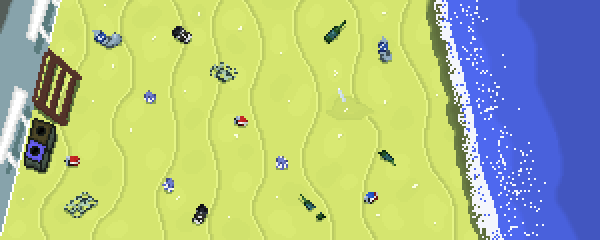
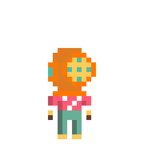
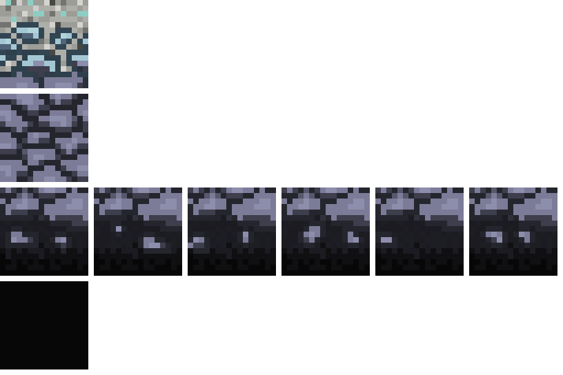
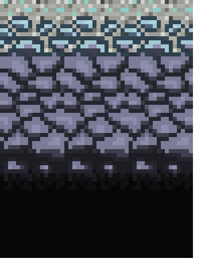
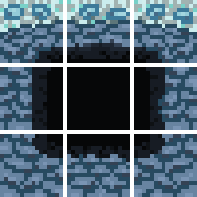
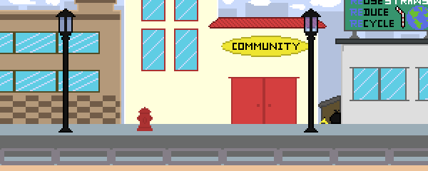
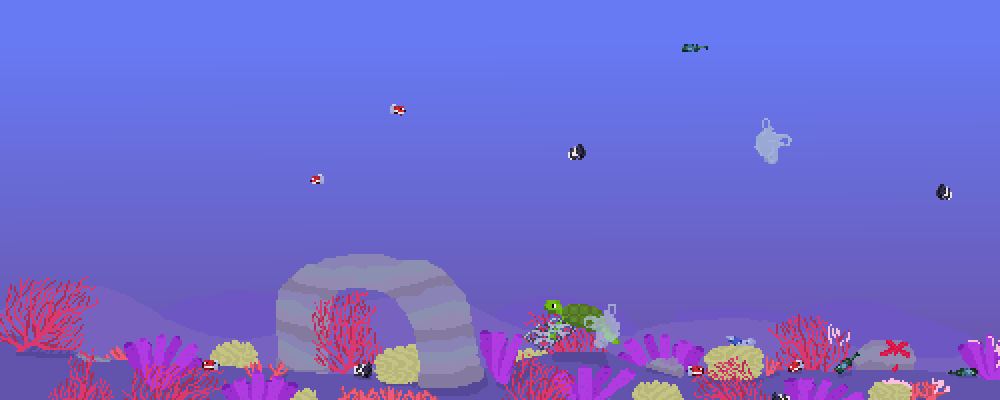
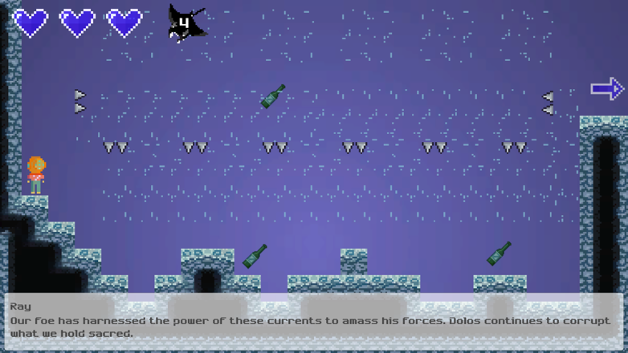

Our goal was to develop a game centered on sustainability and ocean pollution, creating an experience that was both engaging and educational. As the first project in this lab space, we also aimed to set a strong precedent to demonstrate the creative potential of the environment and encouraging future student projects.

I led the visual design and animation for Polaris, developing tilesets, environments, player characters, and in-game assets. Although I had no prior experience with pixel art, I quickly learned to use Aseprite to meet the needs of the project.
As the sole visual designer on this multi-team project, I initially encountered challenges managing both the scope and production pace. To address this, I recruited two additional contributors to support character and splash art, allowing us to scale production more effectively.
In addition to asset creation, I was responsible for integrating visual elements into Unity. This included converting tilesets into modular components for level designers and ensuring animations functioned smoothly within the game engine.






Polaris was successfully published online and installed on lab computers, making it accessible to other students and establishing a foundation for future projects in the Imaginarium space. As the lab’s first completed project, it helped demonstrate the viability of collaborative, student-driven development in this environment.
Through this experience, I strengthened my ability to design cohesive visual systems for interactive media while rapidly learning new tools. I also developed leadership skills by managing visual production and expanding the team to meet project demands. Most importantly, I learned the value of clear communication, scope management, and cross-team collaboration when working on complex, interdisciplinary projects.
The game is available to play here.
